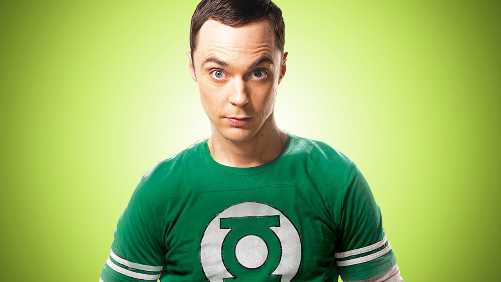
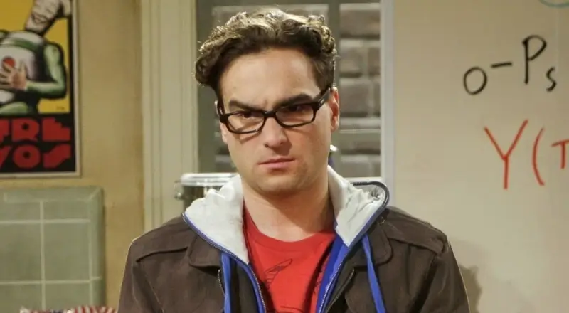
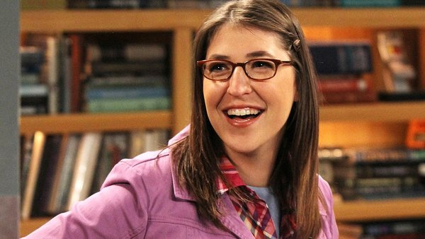
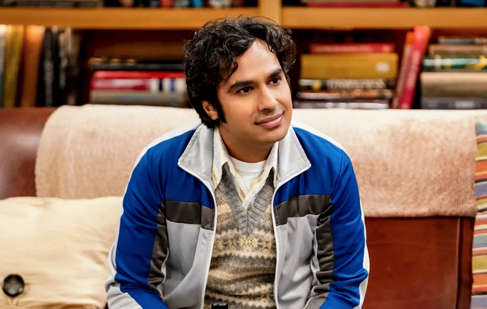
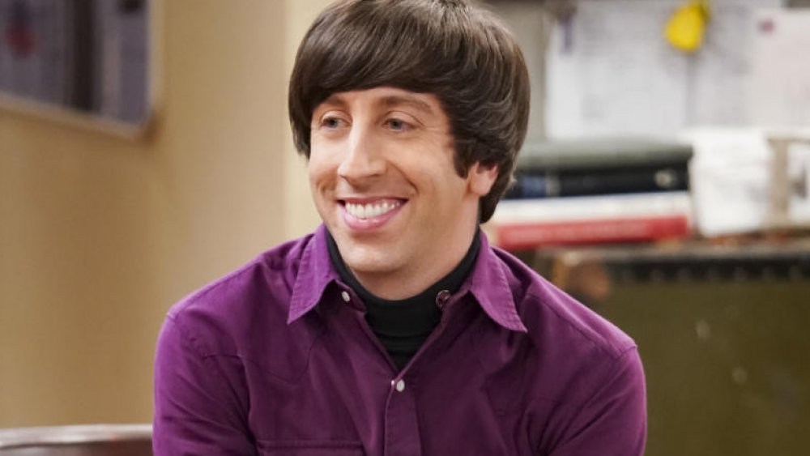
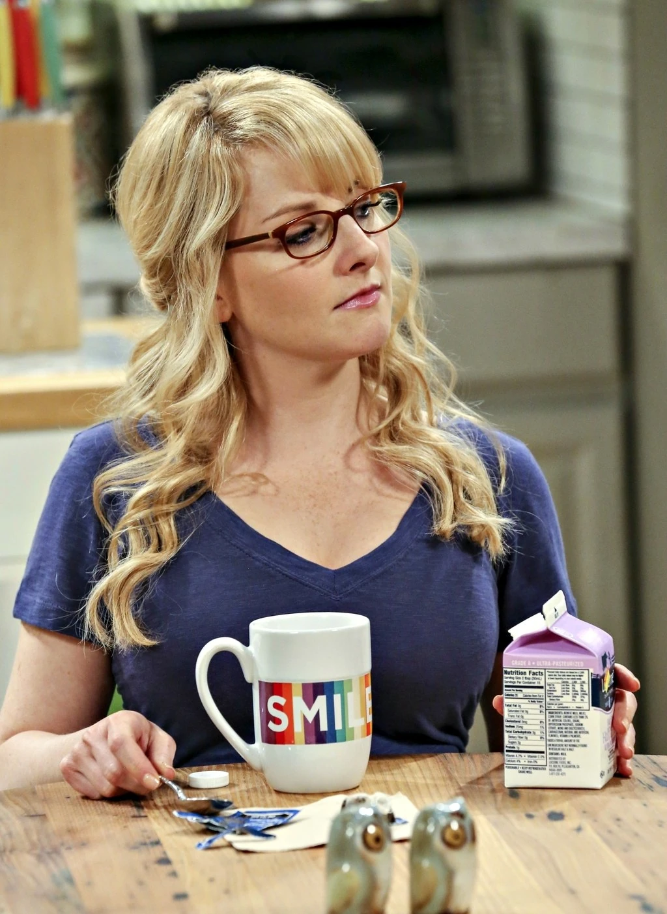

| pictures |
Characters |
Introduction |
Jobs |
|  |
Sheldon Cooper |
Sheldon is a scientist which has a gift of being really smart and being really selfish |
senior theoretical physicist |
 |
Leonard Hofstadter |
Leonard Hofstadter is the room mate of sheldon, he is also sheldons first best friend and also teaches sheldon about emotions that he doesnt feel |
Caltech experimental physicist |
 |
Penny Hofstader |
she is the wife of leonard and is also the first girlfriend of leonard.even though its not believable she is the wife of leonard hofstader. she also helps sheldon realize about the world he doesnt want to be in. |
waitress at her local The Cheesecake Factory/she believes shes an actor |
|  |
Amy Cooper |
She was the first girlfriend and wife of sheldon cooper. amy and sheldon is the definition of "soulmates" they discovered a new theory and got an award. |
Neuroscientist |
|  |
Raj Koothrappali |
Raj Koothrappali is one of the bestfriends of leonard and sheldon. raj is a handsome man with a lot of rizz to girls even though he cant talk to them. |
astrophysicist in the Physics Department at Caltech |
|  |
Howard Wolowitz |
he is also one of the friends that leonard and sheldon hangout with. even though he is perverted he was the first character that had a baby and is also the first character that got married in the series. |
aerospace engineer at Caltech's Department of Applied Physics and an ex-astronaut for NASA |
|  |
Bernadette Rostenkowski |
Bernadette was the first girlfriend of walowitz and in my opinion is the pretiest out of the girls. Bernadette is one of the character that understands howards problem with his mother because she also experiences the same thing. |
Microbiologist |